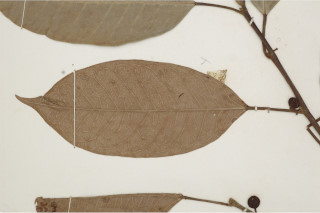
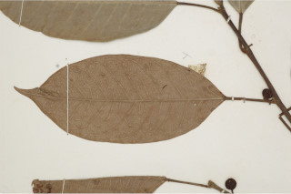

Tall trees, buttressed, up to 35 m tall.
ಆನಿಕೆ ಬೇರುಗಳನ್ನೊಳಗೊಂಡ 35 ಮೀ. ಎತ್ತರದವರೆಗಿನ ದೊಡ್ಡ ಗಾತ್ರದ ಮರಗಳು.
Tall trees, buttressed, up to 35 m tall.
மிகப்பெரிய மரம், தாங்கு வேர்களுடையவை (பட்ரஸ்டு), 35 மீ. உயரம் வரை வளரக்கூடியது.
Bark greyish, smooth; blaze cream.
ತೊಗಟೆ ಬೂದು ಬಣ್ಣದಲ್ಲಿದ್ದು ನಯವಾಗಿರುತ್ತದೆ;ಕಚ್ಚು ಮಾಡಿದ ಜಾಗ ಕೆನೆ ಬಣ್ಣದಲ್ಲಿರುತ್ತದೆ.
Bark greyish, smooth; blaze cream.
மரத்தின் பட்டை சாம்பல் நிறமானது, வழவழப்பானது; உள்பட்டை கிரீம் நிறமானது.
Young branchlets terete, glabrous or subpubescent.
ಕಿರುಕೊಂಬೆಗಳು ದುಂಡಾಗಿದ್ದು ರೋಮರಹಿತ ಅಥವಾ ಉಪ-ಮೃದುತುಪ್ಪಳದಿಂದ ಕೂಡಿರುತ್ತವೆ.
Young branchlets terete, glabrous or subpubescent.
சிறியநுனிக்கிளைகள் குறுக்குவெட்டுத் தோற்றத்தில் வளையமானது, உரோமங்களற்றது அல்லது உரோமங்களுடையது.
Latex white.
ಜಿನುಗು ದ್ರವ ಬಿಳಿಯ ಬಣ್ಣ ಹೊಂದಿರುತ್ತದೆ.
Latex white.
வெள்ளை நிற பால் சுரக்கிறது
Leaves simple, alternate, spiral; stipules to 1 cm long, ovate -lanceolate, silky pubescent, caducous and leaving annular scar; petiole 0.8-3 cm long, canaliculate, glabrous; lamina 6-18 x3-8 cm, narrow elliptic-oblong, lanceolate or oblanceolate, apex acuminate to caudate - acuminate, base acute, margin slightly undulate, chartaceous or thinly coriaceous, glabrous, drying green above, brown beneath; midrib flat above; secondary_nerves 8-13 pairs, prominent; tertiary_nerves reticulate or admedially ramified.
ಎಲೆಗಳು ಸರಳವಾಗಿದ್ದು ಪರ್ಯಾಯ ಮತ್ತು ಸುತ್ತು ಜೋಡನಾ ವ್ಯವಸ್ಥೆಯಲ್ಲಿರುತ್ತವೆ; ಕಾವಿನೆಲೆಗಳು 1 ಸೆಂ.ಮೀ.ವರೆಗಿನ ಉದ್ದ ಹೊಂದಿದ್ದು ಅಂಡ-ಭರ್ಜಿಯಾಕಾರದಲ್ಲಿದ್ದು ರೇಷ್ಮೆಯಂತಹ ಮೃದು ತುಪ್ಪಳದಿಂದ ಕೂಡಿದ್ದು ವಲಯಾಕಾರದ ಗುರುತುಗಳನ್ನುಳಿಸಿ ಉದುರಿ ಹೋಗುತ್ತವೆ;ತೊಟ್ಟುಗಳು 0.8 – 3 ಸೆಂ.ಮೀ. ಉದ್ದ ಹೊಂದಿದ್ದು ಕಾಲುವೆಗೆರೆ ಸಮೇತವಾಗಿರುತ್ತವೆ ಮತ್ತು ರೋಮರಹಿತವಾಗಿರುತ್ತವೆ;ಪತ್ರಗಳು 6 – 18 X 3 – 8 ಸೆಂ.ಮೀ. ಗಾತ್ರವಿದ್ದು ಸಂಕುಚಿತ ಅಂಡವೃತ್ತ- ಚತುರಸ್ರ,ಭರ್ಜಿ ಅಥವಾ ಬುಗುರಿ-ಭರ್ಜಿಯ ಆಕಾರ ಹೊಂದಿದ್ದು, ಕ್ರಮೇಣ ಚೂಪಾಗುವುದರಿಂದ ಹಿಡಿದು ಬಾಲರೂಪಿ- ಕ್ರಮೇಣ ಚೂಪಾಗುವ ತುದಿ,ಚೂಪಾದ ಬುಡ, ಸ್ವಲ್ಪವಾಗಿ ತರಂಗಿತವಾದ ಅಂಚು,ಕಾಗದವನ್ನೋಲುವ ಅಥವಾ ತೆಳುವಾದ ತೊಗಲನ್ನೋಲುವ ಮೇಲ್ಮೈ ಹೊಂದಿದ್ದು ರೋಮರಹಿತವಾಗಿರುತ್ತವೆ,ಪತ್ರಗಳು ಒಣಗಿದಾಗ ಮೇಲ್ಭಾಗದಲ್ಲಿ ಹಸಿರು ಮತ್ತು ತಳಭಾಗದಲ್ಲಿ ಕಂದು ಬಣ್ಣ ಹೊಂದಿರುತ್ತವೆ; ಮಧ್ಯ ನಾಳ ಮೇಲ್ಭಾಗದಲ್ಲಿ ಚಪ್ಪಟೆಯಾಗಿರುತ್ತದೆ ,3 ಆಧಾರ ನಾಳಗಳು ಪತ್ರಗಳ ಬುಡದಲ್ಲಿರುತ್ತವೆ; ಎರಡನೇ ದರ್ಜೆಯ ನಾಳಗಳು 8- 13 ಜೋಡಿಗಳಿದ್ದು ಪ್ರಮುಖವಾಗಿರುತ್ತವೆ;ಮೂರನೇ ದರ್ಜೆಯ ನಾಳಗಳು ವಿಶಾಲ ಜಾಲ ಬಂಧ ವಿನ್ಯಾಸದಲ್ಲಿದ್ದು ಕವಲುಗಳು ಎಲೆಯ ಅಕ್ಷದ ಕಡೆಗೆ ಇರುತ್ತವೆ.
Leaves simple, alternate, spiral; stipules to 1 cm long, ovate -lanceolate, silky pubescent, caducous and leaving annular scar; petiole 0.8-3 cm long, canaliculate, glabrous; lamina 6-18 x3-8 cm, narrow elliptic-oblong, lanceolate or oblanceolate, apex acuminate to caudate - acuminate, base acute, margin slightly undulate, chartaceous or thinly coriaceous, glabrous, drying green above, brown beneath; midrib flat above; secondary_nerves 8-13 pairs, prominent; tertiary_nerves reticulate or admedially ramified.
இலைகள் தனித்தவை, மாற்றுஅடுக்கமானவை, சுழல் போன்று அமைந்தவை; இலையடிச்செதில் 1 செ.மீ. நீளமானது, முட்டை-ஈட்டி வடிவானது, மெண்மையான உரோமங்களுடையது, மற்றும் உதிர்ந்து வட்டவடுக்களை ஏற்படுத்துகின்றன; இலைக்காம்பு 0.8-3 செ.மீ. நீளமானது, குறுக்குவெட்டுத் தோற்றத்தில் கேனாலிகுலேட், உரோமங்களற்றது; இலை அலகு 6-18 ´3-8 செ.மீ., குறுகிய நீள்வட்ட-நீள்சதுர வடிவானது, ஈட்டி வடிவானது அல்லது தலைகீழ் ஈட்டி வடிவானது, அலகின் நுனி அதிக்கூரியது முதல் வால்-அதிக்கூரியது, அலகின் தளம் கூரியது, அலகின் விளிம்பு சிறிது அலை போன்றது, சார்ட்டேசியஸ் அல்லது மெல்லிய கோரியேசியஸ், உரோமங்களற்றது, உலரும் போது அலகின் மேற்பரப்பு பச்சை நிறமானது, கீழ்பரப்பு ப்ரவுன் நிறமானது; மையநரம்பு மேற்பரப்பில் அலகின் பரப்பிற்கு சமமானது; இரண்டாம் நிலை நரம்புகள் 8-13 ஜோடிகள், தெளிவானது; மூன்றாம் நிலை நரம்புகள் வலைப்பின்னல் போன்றவை அல்லது ஆட்மீடியல்லி ராமிபைடு.
Inflorescence syconia, axillary and on leafless twigs, paired or solitary, 0.8-1.5 cm across, subpyriform; flowers unisexual.
ಪುಷ್ಪಮಂಜರಿಗಳು ಸೈಕೋನಿಯ ರೀತಿಯವುಗಳಾಗಿದ್ದು ,ಅಕ್ಷಾಕಂಕುಳಿನಲ್ಲಿ ಮತ್ತು ಎಲೆರಹಿತವಾದ ಕುಡಿಕೊಂಬೆಗಳ ಮೇಲಿರುತ್ತವೆ ಹಾಗೂ ಒಂಟಿಯಾಗಿ ಅಥವಾ ಜೋಡಿಗಳಾಗಿರುತ್ತವೆ, ಗಾತ್ರದಲ್ಲಿ 0.8 – 1.5 ಸೆಂ.ಮೀ.ಅಡ್ಡಗಲತೆ ಹೊಂದಿದ್ದು ಉಪ-ಪೇರು ಹಣ್ಣಿನ ಆಕಾರದಲ್ಲಿರುತ್ತವೆ;ಹೂಗಳು ಏಕ ಲಿಂಗಿಗಳು.
Inflorescence syconia, axillary and on leafless twigs, paired or solitary, 0.8-1.5 cm across, subpyriform; flowers unisexual.
மஞ்சரி சைகோனியம், இலைக்கோணங்களில் காணப்படுபவை மற்றும் இலைகளற்ற கிளைகளில், ஜோடியாகவோ அல்லது தனித்தோ காணப்படுபவை, 0.8-1.5 செ.மீ. குறுக்களவுடையது, சப்பைரிபார்ம் போன்றவை; மலர்கள் ஓர் பாலானவை.
Syconium, in axillary pairs, globose, red, glabrous; peduncle 2.5 cm long; achenes smooth.
ಸೈಕೋನಿಯ (ಸಂಯುಕ್ತ ಫಲ) ಗೋಳಾಕಾರದಲ್ಲಿದ್ದು ಜೋಡಿಯಾಗಿರುತ್ತವೆ ಹಾಗೂ ಕೆಂಪು ಬಣ್ಣದಲ್ಲಿದ್ದು ರೋಮರಹಿತವಾಗಿರುತ್ತವೆ;ವೃಂತ 2.5 ಸೆಂ.ಮೀ.ವರೆಗಿನ ಉದ್ದ ಹೊಂದಿರುತ್ತದೆ; ಅಖೀನುಗಳು ನಯವಾಗಿರುತ್ತವೆ.
Syconium, in axillary pairs, globose, red, glabrous; peduncle 2.5 cm long; achenes smooth.
சைகோனியம், இலைக்கோணங்களில் காணப்படுபவை ஜோடிகள், கோளவடிவானது, சிவப்பு நிறமானது, உரோமங்களற்றது; மஞ்சரிக்காம்பு 2.5 செ.மீ. நீளமானது; சிற்றுலர்கனி (அக்கீன்) வழவழப்பானது.


 
